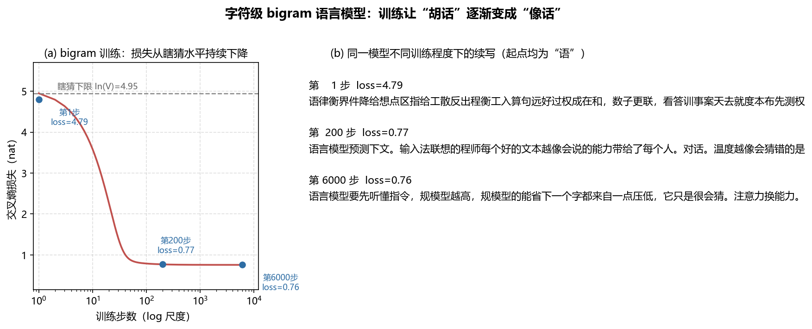
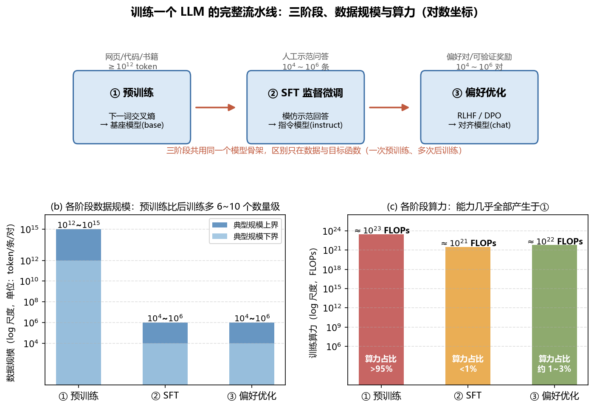
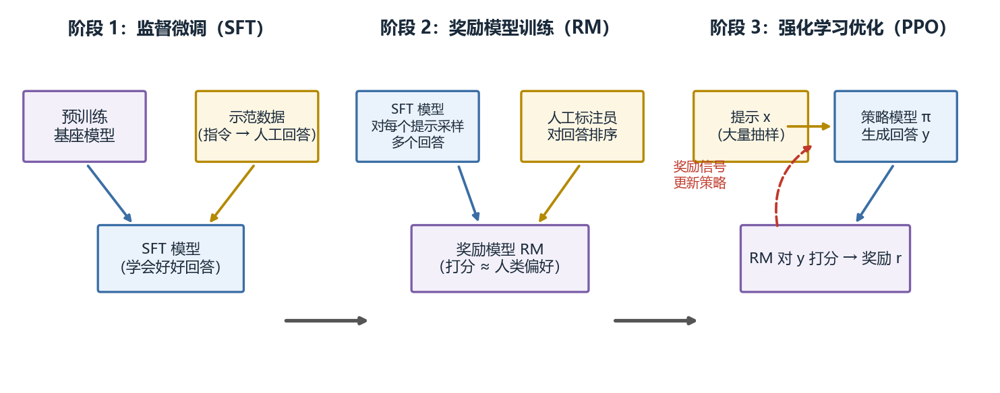

第 1 章 大模型全景：从"猜下一个词"到训练流水线¶
本章导读：大语言模型的全部魔法压缩成一句话就是"给定前文，预测下一个词"。本章不从历史讲起，而是先让你在 30 行代码里亲眼看一次"猜下一个词"的机器如何从胡话进化成半通顺的句子，再把这背后的公式、三阶段训练流水线、规模定律与涌现争议、开源生态逐个讲透，最后给出"能力矩阵与岗位映射"，告诉你作为算法/应用/推理优化工程师分别该把哪些章吃透。本章无前置章节，是全书地图；读完你将能看懂模型发布说明里的绝大部分术语。 预计阅读时间：75 分钟（含动手环节 20 分钟）。
1.1 问题先行：输入法联想与 ChatGPT 是同一台机器¶
在输入法里打出"今天天气"，候选栏会浮现"真不错""怎么样"；把"为什么天空是蓝色的"发给 ChatGPT，它吐出一段瑞利散射的解释。表面上一个在猜字、一个在答问题，底层是同一件事：根据已有文字，计算下一个词出现的概率，然后选出（或采样出）一个。区别只有两个——候选栏只猜一步，ChatGPT 把"猜一步"循环了几百步；输入法的概率表来自你手机里的词频统计，ChatGPT 的概率表来自上万亿 token 文本上训练出的上千亿参数。
这个"循环猜一步"的机制叫自回归（autoregressive）生成：
step 0: 输入 <s> → 采出 "今天"
step 1: 输入 <s> 今天 → 采出 "天气"
step 2: 输入 <s> 今天 天气 → 采出 "很"
step 3: 输入 <s> 今天 天气 很 → 采出 "好" ……直到采出结束符
机器学习里另一大类是判别模型，它建模 \(P(y \mid x)\)（给定输入预测标签）；语言模型建模 \(P(x)\) 本身（数据分布），因此被称为生成模型——学出了数据分布，自然能采样出新文本。同属"预训练语言模型"，BERT 式编码器与 GPT 式解码器的差别如下：
| 范式 | 代表 | 预训练目标 | 注意力方向 | 擅长任务 |
|---|---|---|---|---|
| 判别模型 | TextCNN、BiLSTM 分类器 | \(P(y \mid x)\)，交叉熵分类损失 | 不限 | 分类、回归等有标签任务 |
| 编码器（BERT 式） | BERT、RoBERTa | 掩码重建：随机遮词再还原 | 双向 | 理解类：检索、匹配、抽取 |
| 解码器（GPT 式） | GPT、LLaMA、Qwen | 下一词预测 \(P(x_t \mid x_{<t})\) | 单向（因果） | 生成 + 理解通吃 |
原始 Transformer 论文（2017）解决的是机器翻译，采用"编码器读入源句 → 解码器逐词生成目标句"的双塔结构，整体数据流如图 1：

图 1：Transformer 的整体数据流——输入序列（法语）经编码器组映射为连续表示，解码器以自回归方式逐词产出输出序列（英语）。（图源：Jay Alammar，jalammar.github.io/illustrated-transformer；仅作教学用途，版权归原作者）
decoder-only 架构最终胜出的工程原因有三：训练目标与最终用途（生成）统一；序列中每个位置都提供监督信号，数据效率高；结构简单、易并行扩展。注意力机制的细节见 第 8 章。
顺带把"提示工程"也定位清楚：一段 prompt 不是什么神秘咒语，它只是条件分布的条件。写提示 = 挑选 \(P(x_t \mid \cdot)\) 里那个"\(\cdot\)"的内容与格式，让模型更容易从你想要的那个区域采样。理解了这一点，"为什么 few-shot 示例有效""为什么角色设定能改变语气"都变成概率问题（术语上叫上下文学习，见 1.6 节改造表）。
"大"体现在哪：参数量 \(N \approx 10^9 \sim 10^{12}\)；训练数据 \(D \approx 10^{12} \sim 10^{15}\) token；训练算力 \(C \approx 10^{23} \sim 10^{26}\) FLOPs。规模如何兑换能力，见 1.4 节。
1.2 最小可运行例子：30 行亲眼看一次"下一词预测"¶
依赖：仅 torch（pip install torch）；硬件：CPU 即可。下面这个字符级 bigram 语言模型是整章乃至整本书的种子：模型只有一张 \(V \times V\) 打分表，"输入上一个字符，给词表里每个字符打分"。它小到 5 分钟能读完，却完整包含了 LM 的三要素——查表取特征、对词表打分、交叉熵对账。
import torch
import torch.nn.functional as F
torch.manual_seed(0)
corpus = "语言模型预测下一个词。输入法联想的也是下一个词。训练就是把猜错的程度一点点压低。" * 50
chars = sorted(set(corpus)); V = len(chars) # 字符级词表
stoi = {c: i for i, c in enumerate(chars)}
x = torch.tensor([stoi[c] for c in corpus[:-1]]) # 每个位置的输入字符
y = torch.tensor([stoi[c] for c in corpus[1:]]) # 标签 = 下一个字符
W = torch.zeros(V, V, requires_grad=True) # bigram 打分表：W[i,j]=给定 i 时 j 的打分
opt = torch.optim.Adam([W], lr=0.1)
print(f"V={V}, 瞎猜 loss=ln(V)={torch.log(torch.tensor(float(V))):.3f}")
for step in range(300):
loss = F.cross_entropy(W[x], y) # 每个位置预测下一个字符
opt.zero_grad(); loss.backward(); opt.step()
print(f"训练 300 步后 loss={loss.item():.3f}")
@torch.no_grad()
def generate(W, start, n=20):
out, cur = start, stoi[start]
for _ in range(n):
cur = torch.multinomial(F.softmax(W[cur], dim=-1), 1).item()
out += chars[cur]
return out
W0 = torch.zeros(V, V) # 未训练的表：均匀分布
print("训练前:", generate(W0, "预"))
print("训练后:", generate(W, "预"))
真实运行输出（CPU，约 10 秒）：
V=30, 瞎猜 loss=ln(V)=3.401
训练 300 步后 loss=0.238
训练前: 预联错模个型猜是程想一型训测把测模个模预的
训练后: 预测下一点压低。输入法联想的也是下一个词。
三个关键观察，每一个都是日后的重要对账点：
- 未训练模型 loss 精确等于 \(\ln V\)——均匀瞎猜的交叉熵。任何 LM 实现（无论多大）写完第一件事就是确认"随机初始化 loss ≈ \(\ln V\)"，对不上说明实现有 bug。
- 训练的全部目标就是把 loss 从 \(\ln V\) 往下压。压下来的量衡量"模型对这段文本预测得有多准"，其指数即困惑度（1.3 节）。
- 生成质量的变化与局限同样真实：训练前是完全乱码；训练后局部很通顺，但整体只是在复述训练句——bigram 只看得到前一个字符，没有长程记忆。让模型"看得更远"正是后续 Transformer 与注意力的任务。
四个有意为之的设计决策，值得逐个想清楚：
- 字符级词表：为了把篇幅留给机制而非分词器；真实 LLM 用 BPE 子词（第 4 章），机制完全相同，只是 \(V\) 从几十变成几万到几十万。
- 全量语料做一步梯度：两千字符一次前向就能算完，于是"一个 batch = 全部数据"；真实预训练每步只取一小批（如 4M token），但损失形式一模一样。
- W 初始化为全零：softmax(0) = 均匀分布，起点精确落在"瞎猜"上——这就是观察 1 能严格成立的技巧。
- 标签 = 输入左移一位（
x = corpus[:-1]，y = corpus[1:]）：一句话里每个位置都同时是别处的"条件"和别处的"标签"，监督信号一个都不浪费；nanoGPT 与所有 LLM 的损失对齐都是这一行。
还有一个值得知道的彩蛋：这张表的老前辈是 1980 年代的 n-gram 统计语言模型——直接数语料里"上一字符→下一字符"的出现次数再归一化。可以证明：在全体语料上用梯度下降训练这张表直到收敛，得到的正是计数极大似然解。换句话说，1.2 节的 30 行代码用神经网络的方法"重新发明"了 n-gram，而神经化的收益在下一步就显现：把表换成神经网络参数，未见过的搭配开始有了平滑的概率——泛化，从这里开始。
把同样的训练循环跑久一点、换大语料，loss 曲线与生成样本如何演变？下图是训练 6000 步的真实记录（脚本 gen_bigram_demo.py，语料为 16 句各不相同的短文）：

图 2：字符级 bigram 语言模型训练演示（由代码生成，脚本 assets/ch01/gen_bigram_demo.py 同目录可复现）。左：损失从瞎猜水平 \(\ln V = 4.95\) 一路压到 0.76 后持平——所有常见二字搭配学完后无处可学；右：同一模型在不同训练程度下的续写，从纯乱码变成局部通顺但整体漂移的句子。
1.3 公式逐项拆解：语言模型到底在算什么¶
1.3.0 从打分到概率：logits 与 softmax¶
1.2 节的 W[cur] 是一串任意实数，叫 logits（打分）。神经网络的所有输出都是 logits——它可正可负、不归一，还不是概率。把它变成概率分布的是 softmax：
逐项拆解：
- \(z_j\)：词表中第 \(j\) 个词元的 logit，来自模型的最后一层线性头。它从哪来：上文 \(x_{\le t}\) 经过整个网络算出的"对候选 \(j\) 的青睐程度"。
- \(e^{z_j}\)：为什么用指数——(1) 保证非负（概率不能为负）；(2) 保序（打分越高概率越高）；(3) 可微（能求梯度）。去掉指数换成恒等映射再除以总和，负打分会变成负概率，分布直接非法。
- 分母 \(\sum_{k \in V} e^{z_k}\)：归一化，让所有概率加起来恰好为 1。去掉它会怎样：输出只是"未归一的权重"，无法与交叉熵（一个真正的分布对分布的量）对接。
- \(P_\theta(x_{t+1} = j \mid x_{\le t})\)：完整读法——"模型 \(\theta\) 认为下一个词是 \(j\) 的概率，条件是见过全部上文"。符号 \(\theta\) 强调这些概率是参数的函数：参数一变，每个条件分布都变，这正是"训练"在改的东西。
softmax 与交叉熵搭配时还有一个关键性质（softmax + 交叉熵的联合梯度坍缩成一个减法），是全书最重要的梯度公式，第 2 章 2.3 节完整推导。
1.3.1 链式法则分解：联合概率的精确恒等式¶
把文本切成词元（token，文本的最小离散单位，如何切分见 第 4 章）。给定词元序列 \(x_1, x_2, \dots, x_T\)（\(T\) 为序列长度），语言建模的目标是建模联合概率。由概率链式法则：
逐项交代来龙去脉：
- \(x_t\)：序列中第 \(t\) 个词元，取值是词表 \(V\) 中某个编号。它从哪来：分词器切分文本的输出。
- \(x_{<t}\)：前缀 \((x_1, \dots, x_{t-1})\)，即"已知条件"。去掉它会怎样：\(P(x_t)\) 变成无条件概率，模型只能学全局词频，等于回到"输入法只会推荐常用字"。
- \(t = 1 \dots T\)：连乘号 \(\prod\) 表示整句概率是每一步条件概率的乘积。依据：条件概率定义 \(P(a, b) = P(b \mid a) P(a)\) 反复展开，没有任何近似。
- 近似发生在哪：我们用参数为 \(\theta\) 的神经网络 \(P_\theta(x_t \mid x_{<t})\) 去拟合每个条件分布——分解是精确的，近似只在神经网络拟合处发生。这句话的含义：只要每个条件分布拟合得好，整句联合概率就准，因此"下一词预测"这个看似简单的任务足以逼模型学会语言。
1.3.2 训练目标：负对数似然¶
训练目标是最小化负对数似然：
- \(P_\theta(x_t \mid x_{<t})\)：模型对"真实下一个词"赋予的概率。取 \(\log\) 的原因：连乘概率会数值下溢，取对数后变成连加；且 \(\log\) 让"罚分"对概率呈线性——把正确词的概率从 0.01 提到 0.02 与从 0.4 提到 0.8，改善量相同。
- 负号与 \(\frac{1}{T}\)：损失习惯上"越小越好"，故取负；除以 \(T\) 得到每词平均，使不同长度文本的损失可比。
- 去掉求和会怎样：只优化句中某一个位置，其余位置的监督信号全部浪费——这正是 BERT 之外每个位置都有信号、GPT 数据效率高的来源。
- 第 2 章将证明：这个损失恰好是模型分布与数据分布之间的交叉熵，最小化它 ⇔ 最小化 KL 散度 ⇔ 最大似然，三者一位一体。
动手算一次（数字要过手才长在身上）。设语料只有一句"今天 天气 很 好"，模型对"今天→天气""今天 天气→很""今天 天气 很→好"三个位置给出的概率分别为 0.3、0.05、0.02，则
对应的 \(\mathrm{PPL} = e^{2.70} \approx 15\)：模型每一步像在约 15 个词里犹豫。若把三个概率都提到 0.8，\(\mathcal{L}\) 降到约 0.22、PPL 约 1.3——"loss 数字的含义"从此不再是黑话。
1.3.3 困惑度：把 nat 翻译成人话¶
\(\overline{\mathrm{CE}}\) 即 1.3.2 的平均负对数似然（单位 nat）。PPL 的直观含义是等效均匀候选数：模型每一步像在多少个词里犹豫。用 1.2 节的模型做一次对账：
import torch
print(torch.exp(torch.tensor(3.401))) # 1.2 节训练前的 loss=ln(30)
# tensor(29.9941)：未训练模型 PPL ≈ 词表大小——第二个对账点
| 场景 | \(\overline{\mathrm{CE}}\) (nat) | PPL | 直观含义 |
|---|---|---|---|
| 在 \(V = 30\) 字符上均匀乱猜（1.2 节模型初始态） | \(\ln 30 \approx 3.40\) | 30 | 每步 30 个字符等概率瞎选 |
| 较强的通用基线 | \(\approx 2.0\) | \(\approx 7.4\) | 平均像只在约 7 个词之间犹豫 |
| 近乎记忆/复制 | \(\approx 0\) | \(\approx 1\) | 几乎完全确定下一个词 |
1.4 训练一个 LLM 的完整流水线：三阶段、数据规模与算力¶
有了损失函数，"训练一个 LLM"仍是三场性质完全不同的马拉松。开源生态里你会反复看到 base、instruct、chat 三种后缀的模型——分界线正是训练的三个阶段。图 3 用一张代码生成的对数坐标图把它们讲清（数据量级依据：GPT-3 预训练约 \(3.1 \times 10^{23}\) FLOPs、3000 亿 token，见 arXiv:2005.14165；InstructGPT 的 SFT 仅约 1.3 万条示范、后训练算力不足预训练 3%，见 arXiv:2203.02155）：

图 3：训练一个 LLM 的完整流水线（由代码生成，脚本 assets/ch01/gen_pipeline_scale.py 同目录可复现）。上：三阶段流程框图，共用同一模型骨架；左下：各阶段数据规模（对数坐标）——预训练比后训练多 6~10 个数量级；右下：各阶段算力（对数坐标）——能力几乎全部产生于预训练。
| 阶段 | 数据 | 数据规模 | 算力占比 | 目标函数 | 产出物 |
|---|---|---|---|---|---|
| ① 预训练 | 网页、代码、书籍、论文 | \(10^{12} \sim 10^{15}\) token | >95% | 全序列下一词交叉熵 | 基座模型 |
| ② SFT | 人工书写的"指令→回答"示范 | \(10^4 \sim 10^6\) 条 | <1% | 同样的交叉熵，但只在回答部分计算 | 指令模型 |
| ③ 偏好优化 | 人类/模型标注的偏好对、可验证奖励 | \(10^4 \sim 10^6\) 对 | 约 1–3% | 强化学习目标或 DPO 类损失 | 对齐/对话模型 |
怎么把图 3 用到你自己的项目（以单卡玩家为例）。假设一张 RTX 4090：bf16 稠密算力约 \(1.65 \times 10^{14}\) FLOPs/s，实际利用率按 30% 计即 \(5 \times 10^{13}\) FLOPs/s；连续训 7 天 ≈ \(3 \times 10^{19}\) FLOPs。按 \(C \approx 6ND\) 与 Chinchilla 配比 \(D = 20N\) 反推：\(N \approx 5 \times 10^8\)、\(D \approx 10^{10}\) token——大约是 GPT-2 中量级、10B token 语料。这就是"为什么单卡玩家从 GPT-2 级别起步而不是从 7B 起步"的算术答案；也是本书动手环节都围绕小模型设计的理由。后训练阶段（SFT/偏好优化）则按预训练算力的百分之几预留即可（图 3 右下）。
三个阶段共用同一个模型骨架，区别只在数据与目标函数——这是"一次预训练、多次后训练"的工程基础，也是同一基座能衍生出 instruct/chat/代码/数学一大家子变体的原因。②③合称后训练（post-training），经典 RLHF 流程如图 4：

图 4：RLHF 三阶段流程——先用示范数据做监督微调；再让标注员对同一提示的多个回答排序、训练奖励模型；最后以奖励模型打分为信号，用强化学习（如 PPO）优化策略模型。（图源：本书自绘，流程参考 InstructGPT，arXiv:2203.02155；仅作教学用途）
为什么说"预训练学到能力，后训练塑造行为"。看图 3 右下角的数量级：SFT 只用约 1.3 万条示范，而 GPT-3 预训练用了约 3000 亿 token——相差 7 个数量级。世界知识、语法、代码、推理模式这些"能力"几乎全部来自预训练的压缩；SFT 与偏好优化改变的主要是条件分布的格式、风格与取向——把基座中已存在的能力"对齐"到对话界面上。旁证：GPT-3 时代的基座靠 few-shot 提示就已经很强。更严谨的表述是：预训练决定上限，后训练决定下限与可用性。且边界在松动——o1/DeepSeek-R1 表明，后训练的强化学习也能"激励"出新的推理行为，而不只是改格式（见 第 14 章）。
1.4.1 规模定律：算力可预测地兑换损失下降¶
买多少算力、训多大模型、配多少数据？Kaplan et al. (2020) 给出经验答案：测试损失随参数量 \(N\)、数据量 \(D\)、算力 \(C\) 呈幂律平滑下降，且近似满足
依据：每个参数在每个 token 上前向约 2 FLOPs、反向约 4 FLOPs，合计 6（第 2 章会从矩阵乘 FLOPs 计数推导；前向：反向 ≈ 1:2 也是"训练比推理贵 3 倍"的出处）。用 GPT-3 做一次实算校验：\(N = 175 \times 10^9\)，\(D = 300 \times 10^9\)，则 \(C \approx 6ND \approx 3.15 \times 10^{23}\) FLOPs，与其技术报告一致——一道乘法就能估算任何训练预算。Chinchilla (2022) 进一步修正：给定算力预算，\(D\) 应与 \(N\) 同步扩展（约 20 token/参数），"盲目堆参数"不是最优。这两条是把训练预算从玄学变成工程决策的全部数学，深入讨论见 第 10 章。
1.4.2 涌现能力及其争议：一次测量学上的正面对账¶
给模型加显卡，能力是"均匀变好"还是"突然开窍"？Wei et al. (2022) 定义涌现能力（emergent ability）为"在小模型中不存在、但在大模型中突然出现的能力"，典型例子：多步算术（小模型 few-shot 准确率接近随机，越过某规模后陡增）、思维链增益（提示中加"一步一步想"只在足够大的模型上生效）、指令泛化。
争议（务必搞清的测量学论点）：Schaeffer et al. (2023) 指出，涌现可能只是指标的产物——能力本身在平滑进步，但不连续的指标把它显示成了跳变。机制：多选题/Exact Match 这类指标把"部分正确"记为零分；小模型每一步都在变好（困惑度平滑下降，符合规模定律），但只有当"每题都接近全对"的累积效果越过"全对才得分"的阈值时，分数才从随机水平跳起——曲线形状由指标的非线性决定，而非能力突变。换连续指标（token 编辑距离、对数概率），同一批实验的"跳变"消失、变成平滑改善。
| 指标类型 | 例子 | 随规模的行为 |
|---|---|---|
| 不连续/分段指标 | Exact Match、多选题准确率 | 小模型近似随机猜测，越过阈值后"跳变"——涌现假象高发区 |
| 连续指标 | 困惑度、token 编辑距离 | 平滑、可预测地改善，与规模定律一致 |
Tip
两篇连读的公允结论：涌现部分是指标的假象，但"大模型解锁了小模型做不到的应用"这一工程事实并不因此改变。做评测选指标时，应同时报告连续指标（见 第 22 章）。
1.4.3 训练只是花钱的开始：部署侧的账¶
\(C \approx 6ND\) 只覆盖训练。模型上线后每次生成一个 token 都要做一次前向，而自回归生成是逐 token 串行的（1.1 节），部署侧的成本结构完全不同：batch=1 解码时矩阵乘退化为矩阵-向量乘，瓶颈从算力转移到显存带宽——每生成一个词都要把全部权重和缓存读一遍。这解释了三件你早晚会碰到的事：为什么推理服务按"吞吐/时延/显存"三个指标分别优化、为什么量化（把权重压到 8/4 bit）对部署如此重要、为什么 KV 缓存是推理引擎的核心数据结构。这些是 第 15–18 章的主题，此处只需建立"训练一次、推理亿万次"的成本直觉。
1.5 官方源码对照：nanoGPT 与你的 30 行 bigram¶
1.2 节的三要素——查表取特征、对词表打分、交叉熵对账、采样循环——在公认的最好教材仓库 nanoGPT（karpathy/nanoGPT，约 300 行训练 GPT-2）里逐行都有对应。以下节选自该仓库 model.py 的 GPT.forward（仓库：karpathy/nanoGPT，文件 model.py）：
tok_emb = self.transformer.wte(idx) # token embeddings of shape (b, t, n_embd)
pos_emb = self.transformer.wpe(pos) # position embeddings of shape (t, n_embd)
x = self.transformer.drop(tok_emb + pos_emb)
for block in self.transformer.h:
x = block(x)
x = self.transformer.ln_f(x)
if targets is not None:
# if we are given some desired targets also calculate the loss
logits = self.lm_head(x)
loss = F.cross_entropy(logits.view(-1, logits.size(-1)), targets.view(-1), ignore_index=-1)
else:
# inference-time mini-optimization: only forward the lm_head on the very last position
logits = self.lm_head(x[:, [-1], :]) # note: using list [-1] to preserve the time dim
loss = None
# ...（省略 return）
以及 GPT.generate 的采样循环（同一文件）：
logits, _ = self(idx_cond)
logits = logits[:, -1, :] / temperature
if top_k is not None:
v, _ = torch.topk(logits, min(top_k, logits.size(-1)))
logits[logits < v[:, [-1]]] = -float('Inf')
probs = F.softmax(logits, dim=-1)
idx_next = torch.multinomial(probs, num_samples=1)
idx = torch.cat((idx, idx_next), dim=1)
# ...（省略循环头与截断逻辑）
与 1.2 节手写版逐行对账："官方就是这么写的，原因如下"：
| 你的 bigram | nanoGPT | 官方为什么这么写 |
|---|---|---|
W[x]：一张表查所有位置的打分 |
wte(idx) + 12 层 Transformer block |
表只有"上一字符→下一字符"的容量；Transformer 让每个位置的打分依赖全部上文 |
W 本身就是 logits |
lm_head(x)：向量→词表打分 |
现代模型把"特征"与"打分头"分开，输出头可与输入 embedding 共享权重（weight tying，第 3 章） |
F.cross_entropy(W[x], y) |
F.cross_entropy(logits.view(-1, V), targets.view(-1)) |
完全相同——展开 batch 维后都是"每位置对词表的交叉熵" |
| 无 | logits[:, -1, :] 只算最后位置 |
自回归一次只新增一个词，算整个序列是浪费——推理优化的第一课（第 15 章） |
| 无 | idx[:, -self.config.block_size:] 截断上下文 |
模型训练时最长只见过 block_size 个 token（GPT-2 为 1024），超长部分必须裁掉——上下文窗口的来源（见本章术语详解） |
还有一个值得注意的"没写的"：nanoGPT 的生成循环每一步都把整个序列重新前向一遍（self(idx_cond)），没有任何缓存——教材为了简单牺牲了效率；真实推理引擎会把每层的中间结果缓存下来只算新 token（KV 缓存，第 15 章），速度差几个数量级。读教材代码时要分清"机制"与"工程优化"，两者混为一谈是新手最常见的误读。
改一改：把 generate 里的 F.softmax(W[cur], dim=-1) 换成 F.softmax(W[cur] / 0.5, dim=-1) 与 F.softmax(W[cur] / 5.0, dim=-1) 各跑几次。低温下输出很快退化成对训练句的逐字复读，高温下又退回乱码——温度是控制"确定性与多样性"的连续旋钮，第 2 章 2.3 节会用一张分布曲线图把它讲透。
1.6 LLM 里的改造：从 bigram 到现代 LLM¶
把 1.2 节的种子模型逐步"改造"一遍，改造路径就是八十年语言模型史，也是本书的目录：
| 原始做法（bigram/早期） | 现代做法（LLM） | 动机 | 出处/章节 |
|---|---|---|---|
| 计数统计或查表估计 \(P(x_t \mid x_{t-1})\) | 神经网络拟合条件分布 | 泛化到未见搭配，参数共享 | NNLM, Bengio 2003；第 2 章 |
| 只看前 1（或 \(n\)）个词 | 注意力看全部上文 | 长程依赖：上文越远信息越不丢 | Transformer, arXiv:1706.03762；第 8 章 |
| 词表 = 字符/词 | BPE 子词切分 | 兼顾词表大小与序列长度 | 第 4 章 |
| 无位置概念 | 位置编码/旋转位置编码 RoPE | 注意力本身对顺序不敏感 | 第 5 章 |
| 编码器-解码器双塔 | decoder-only 单塔 | 训练目标与用途统一、每个位置都有监督 | GPT 系列；1.1 节 |
| 只做下一词预测 | 预训练 + SFT + 偏好优化 | 能力≠可用：补格式、对齐人类偏好 | InstructGPT, arXiv:2203.02155；第 13–14 章 |
| 单任务单模型 | 一个基座 + 提示/微调衍生多任务 | 上下文学习与参数高效微调 | GPT-3, arXiv:2005.14165；第 13 章 |
1.6.1 开源生态地图：只记真正重要的¶
Star 数与 API 会过时，但目录结构多年稳定。先按"你现在要干什么"选类别，再在类内挑 1–2 个深入；不在表内的项目几乎都是这几类的变体或下游。
| 类别 | 项目 | 仓库 | 一句话定位 |
|---|---|---|---|
| 训练地基 | PyTorch | pytorch/pytorch | 一切的地基 |
| 训练地基 | nanoGPT | karpathy/nanoGPT | 约 300 行训练 GPT-2，公认最佳教材 |
| 模型与权重 | transformers | huggingface/transformers | 事实标准模型库，加载/训练/推理几乎所有主流架构 |
| 模型与权重 | LLaMA / Qwen / DeepSeek | meta-llama / QwenLM / deepseek-ai | 开源权重三大代表：美/中/MoE 旗舰 |
| 微调工具 | LLaMA-Factory | hiyouga/LLaMA-Factory | 一站式微调：WebUI + 主流模型 + LoRA |
| 微调工具 | TRL / PEFT | huggingface/trl / huggingface/peft | SFT/DPO/GRPO 训练器与参数高效微调官方库 |
| 推理引擎 | vLLM | vllm-project/vllm | PagedAttention 高吞吐服务的事实标准 |
| 推理引擎 | llama.cpp / Ollama | ggml-org/llama.cpp / ollama/ollama | CPU/边缘量化推理，一行命令本地跑模型 |
| 数据工具 | datatrove / dolma | huggingface/datatrove / allenai/dolma | 预训练语料清洗流水线（第 11 章） |
| 评测 | lm-evaluation-harness | EleutherAI/lm-evaluation-harness | 学术评测标准库（第 22 章） |
| 应用框架 | LangChain / LlamaIndex | langchain-ai/langchain / run-llama/llama_index | LLM 应用编排与 RAG 数据接入 |
| 多卡训练 | Megatron-LM / DeepSpeed | NVIDIA/Megatron-LM / microsoft/DeepSpeed | 大规模并行与 ZeRO 显存优化工业标准（第 12 章） |
实战提示（消费级 GPU）
8–12GB 显存的推荐组合：LLaMA-Factory（微调）+ vLLM 或 Ollama（推理）+ lm-evaluation-harness（评测）。Megatron/DeepSpeed 的技术思想值得学，本书涉及处均给出单卡替代方案。
1.7 能力矩阵与岗位映射：你该吃透哪几章¶
不同岗位对这本书的"必读密度"不同。下表给出三条典型路线；"吃透"的标准是本章 1.5 节那样能对账：公式能推导、代码能复写、坑能说出口。
| 岗位 | 日常主战场 | 必须吃透 | 选修/链接即可 |
|---|---|---|---|
| 算法工程师（训练/后训练） | 数据配比、训练稳定性、对齐效果 | 第 2、3、8 章（数学/网络/注意力）+ 第 10–14 章（预训练、数据、分布式、SFT、对齐） | 第 15–18 章了解推理侧约束即可 |
| 应用工程师（RAG/Agent/产品） | 提示、检索、工具调用、评测 | 第 1、4、15 章 + 第 19–22 章（提示 RAG、Agent、多模态、评测安全） | 第 6、8 章读懂架构即可，推导可跳 |
| 推理优化工程师（serving / kernel） | 吞吐、时延、显存、算子 | 第 2、3、8 章 + 第 15–18 章（推理、服务、GPU kernel、量化） | 第 13–14 章了解训练产物形态即可 |
三条路线共用同一块承重墙：第 2、3、8 章（数学、网络与反向传播、注意力）。给自己安排进度时可参照"四周路线"：第 1 周第 1–2 章（全景 + 数学工具箱），第 2 周第 3–5 章（组件层），第 3 周第 6–9 章（模型层），第 4 周按岗位选修训练层或部署层——每一步都有独立可用的产出，停在任何一周都不亏。
1.7.1 本书章节地图¶
| 板块 | 章节 | 回答的主线问题 | 板块内依赖 |
|---|---|---|---|
| 地基 | 第 1–3 章 | 语言模型在算什么？梯度怎么回传？ | 顺序读 |
| 组件层 | 第 4–5 章 | 文本怎么变成 token？位置信息怎么注入？ | 依赖第 2–3 章 |
| 模型层 | 第 6–9 章 | Transformer 逐行长什么样？注意力/MoE/架构取舍 | 依赖组件层；第 8 章是承重墙 |
| 训练层 | 第 10–14 章 | 预训练怎么跑？数据怎么洗？怎么微调对齐？ | 依赖模型层 |
| 部署层 | 第 15–18 章 | 怎么又快又省地服务与压模型？ | 依赖模型层，与训练层可并行 |
| 应用层 | 第 19–22 章 | 提示/RAG/Agent/多模态/评测安全 | 最独立，可随时切入 |
自检清单（三条路线通用，每学完一章合上书问自己）：(1) 这一章的核心公式我能在白纸上从假设推到结论吗？(2) 我能写出 ≤30 行的最小实现并与官方 API 数值对账吗？(3) 我能说出这条公式的三个工程坑吗？三问全"是"才算吃透；任何一问卡住，回到对应小节重做双向对账。第 2 章我们从承重墙的第一块砖开始：梯度下降与交叉熵。
1.8 常见误区与坑¶
- 拿 base 模型当 chat 模型用，然后得出"模型很笨"的结论。base 只有预训练，你问它问题，它更可能续写出更多问题。三种后缀的分界线见 1.4 节；选型第一件事是确认训练阶段。
- 显存估算只算权重。"7B 模型 14GB 显存就能跑"只对推理的权重成立；训练还要加优化器状态（AdamW 约 \(8N\) 字节）与激活值，实际是权重的 4–6 倍（第 12 章 给完整账本）。MoE 模型还要区分"总参数"（管显存）与"激活参数"（管算力）。
- 把涌现当必然，把"再大就会好"当技术方案。1.4.2 节的结论：换连续指标后许多"涌现"是平滑进步；在自己的任务上，小模型 + 好数据 + 好评测往往比等规模更划算。
- 忽视分词器的中文压缩率。同样 8k 上下文窗口，对中文不友好的分词器实际能装的内容可能只有一半，API 成本按 token 计费时差距直接体现在账单上（第 4 章）。
- 把榜单分数当承诺。分数高度依赖评测集且可能与训练数据重合；模型卡的"局限性声明"往往比分数更值得逐字读（延伸阅读有模型卡官方文档链接）。
本章小结¶
带走这八条：
- 语言模型 = 对"下一词条件分布 \(P(x_t \mid x_{<t})\)"建模的自回归机器；链式分解是精确恒等式，近似只发生在神经网络拟合处。
- 未训练模型 loss ≈ \(\ln V\) 是你实现任何 LM 后的第一个对账点；训练的全部目标是把 loss 从 \(\ln V\) 往下压。
- bigram 实验（图 2）同时展示了能力（局部通顺）与天花板（无长程记忆）——看得更远是 Transformer/注意力的任务。
- 训练三阶段共用同一骨架：预训练给能力（>95% 算力）、SFT 教格式、偏好优化塑行为；预训练决定上限，后训练决定下限与可用性。
- \(C \approx 6ND\) 与"约 20 token/参数"是规模定律最常用的两条；涌现部分是不连续指标的测量假象，评测应同时报告连续指标。
- nanoGPT 与 30 行 bigram 在"查表取特征、词表打分、交叉熵、采样循环"四处逐行同构——大模型不是另一种东西，是同一件事的放大。
- 开源生态记住 7 个类别（地基/权重/微调/推理/数据/评测/应用），每类先深入 1–2 个。
- 岗位路线可三分（算法/应用/推理优化），但第 2、3、8 章是所有路线共用的承重墙——下一章就从第 2 章的梯度下降与交叉熵开始。
本章术语详解¶
词元（token）¶
文本的最小离散单位，是模型实际"看到"和"产出"的对象：模型从不直接处理字符或单词，而是先由分词器把文本切成 token 序列，每个 token 再映射为一个向量。它解决"把任意连续文本变成定长词表内的离散编号"的问题，从而可以套用神经网络。工程中在 tokenizer 输出、按 token 计费、显存估算等所有场合都会碰到它。与"词"的区别：一个英文长词或一个汉字片段都可能被拆成多个 token，中文平均压缩率是评估分词器的实用指标。
语言建模（language modeling）¶
对"给定前文，下一个词元是什么"的条件分布 \(P(x_t \mid x_{<t})\) 建模的任务，1.3 节全部数学的出发点。它把"理解语言"这个模糊目标转化为可计算、可优化的监督学习问题——互联网上的任意文本都自动成为训练信号，无需人工标注。工程里预训练目标、F.cross_entropy 的左移对齐、"未训练 loss 应等于 \(\ln V\)"的对账检查都是它的影子。与分类任务的区别：标签空间是整个词表且每个位置都有标签。
自回归生成（autoregressive generation）¶
把模型的一次"下一词预测"循环起来：输出拼回输入、再预测下一个，直到产出结束符（1.1 节示意）。它解决"如何用单步预测器生成任意长文本"，代价是生成只能逐 token 串行——这是后续推理章节 KV 缓存、连续批处理等技术的根本动机。工程中 generate() 循环、流式输出接口直接面对它。与一次前向出整句的非自回归方法（常见于语音）相对，文本 LLM 几乎清一色自回归。
生成模型（generative model）¶
建模数据本身分布 \(P(x)\)（因此能采样生成新数据）的模型，与只建模 \(P(y \mid x)\) 的判别模型相对。这个区别决定训练信号来源：生成模型用无标注数据自监督，判别模型必须有标签——所以语言模型能吃下整个互联网。工程中选型注意：同一个 Transformer 骨架配不同训练目标就分属两类（GPT 式生成、BERT 式判别式理解）。
解码器架构（decoder-only architecture）¶
只保留 Transformer 解码器一侧、以因果注意力遮蔽未来的架构，是 GPT 之后几乎所有主流 LLM 的选择。胜出的工程原因在 1.1 节末尾：目标与用途统一、每个位置有监督信号、结构简单易扩展。与编码器架构（BERT：双向注意力、掩码重建）对照理解：编码器输出"每个位置的上下文表示"，适合理解类任务；解码器输出分布，天然适合生成。第 8 章逐行拆解其核心组件。
因果注意力（causal attention）¶
只允许每个位置 attend 到它自己及之前的token、用上三角掩码遮蔽"未来"的注意力形式，1.1 节表中"单向"二字的实现。它解决"训练时不能偷看答案"的问题：既然任务是预测下一个词，第 \(t\) 个位置的计算就绝不能包含 \(t\) 之后的信息，否则训练就是在自欺。工程中训练与推理都要维护这个掩码（推理中表现为"只能增量地看到新 token"）。与双向注意力的区别：BERT 类编码器可以看全文，因此只能做"填空"类目标而不能做自回归生成。
困惑度（perplexity, PPL）¶
平均交叉熵的指数 \(\exp(\overline{\mathrm{CE}})\)，含义是"模型每一步像在多少个词里犹豫"（等效均匀候选数）。它把抽象的 nat 翻译成直觉：PPL 7.4 ≈ 每步只在约 7 个候选中挑选；未训练模型 PPL ≈ 词表大小。工程中论文与模型卡用它报告基座质量，它是任务无关的模型固有指标。与准确率的区别：PPL 对"错得多离谱"敏感，对具体任务不敏感。
自监督学习（self-supervised learning）¶
不需要人工标注、从数据自身构造监督信号的训练方式；下一词预测是其最成功实例——文本的下一个词就是免费标签。它解决了"标注数据昂贵、互联网文本免费"的规模矛盾，是预训练范式的引擎。工程中你在预训练损失、续训/领域适配中直接使用它。与监督微调的区别：自监督的标签由数据自动生成，SFT 的标签（示范回答）由人写。
基座模型（base model）¶
仅完成预训练的模型：续写能力极强，但你问它问题，它更可能"续写出更多问题"。理解这点至关重要——能力本体在基座里已经就位，base 与 instruct 的行为差异是后训练塑造的（1.4 节）。工程中做预训练续训、领域适配或研究实验从 base 出发；做应用几乎总是选 instruct/chat。与指令模型的区别不在"会什么"，而在"以什么格式响应"。
监督微调（supervised fine-tuning, SFT）¶
在人工书写的"指令 → 回答"示范数据上，用与预训练相同的交叉熵损失继续训练（通常只在回答部分计算损失）。它解决"把基座能力接入对话界面"的问题——1.3 万条高质量示范就能显著改变行为（InstructGPT）。工程中在 LLaMA-Factory/TRL 里跑的最常见任务就是它，数据质量远比数量重要。指令微调（instruction tuning）是同义说法。
人类反馈强化学习（RLHF, reinforcement learning from human feedback）¶
用人类偏好数据训练一个奖励模型，再以奖励模型打分为信号用强化学习优化语言模型（流程见图 4），标准出处是 InstructGPT。它解决"好回答难以用交叉熵定义、但两两比较好判"的问题——标注员只需说哪个更好。工程中 TRL 的 PPO/DPO/GRPO 训练器都是其变体。与 SFT 的区别：SFT 模仿示范（学"什么是好的"），RLHF 优化偏好（学"哪个更好"）。
对齐（alignment）¶
让模型行为符合人类意图、偏好与价值观的后训练总称，涵盖 SFT、RLHF、DPO 及其变体。它解决"能力≠可用"的落差：基座什么都知道，但不知道该以什么姿态回应人类。工程中的直接体现是"有用、诚实、无害"三目标的权衡与安全拒答边界等产品决策。与后训练（post-training）的关系：后者是流程名词（预训练之后的一切训练），对齐强调其目的。
规模定律（scaling law）¶
测试损失随参数量、数据量、算力按幂律平滑下降的经验规律，Kaplan et al. (2020) 系统化、Chinchilla (2022) 修正。它把"买多少算力、训多大模型、配多少数据"变成可预算的工程决策，\(C \approx 6ND\) 与"约 20 token/参数"是最常用的两条。工程中立项估算成本、判断"堆参数还是加数据"都靠它。与涌现能力的关系：同一现象的两种测量视角（1.4.2 节）。
上下文学习（in-context learning, ICL）¶
不改权重、只在提示中放几个任务示例，模型就能"现场学会"该任务的能力，由 GPT-3 大规模展示。它解决了"每个任务都微调一遍"的昂贵流程——部署一个模型服务大量任务。工程中 few-shot 示例、RAG 模板的本质都是 ICL。与微调的区别：ICL 只改条件（输入），微调改条件分布本身（权重）；ICL 能力从何而来至今是研究热点。
上下文窗口（context window）¶
模型一次前向能处理的最大 token 数 \(T_{\max}\)，由训练时的序列长度（nanoGPT 里的 block_size）与位置编码方案决定。它是最常被查询的规格参数：RAG 要塞检索结果、Agent 要塞工具返回、长文档摘要直接受它约束。工程中超过窗口的常见症状是输出突然失控或被截断；不同模型对"窗口内有效长度"的利用也不同（中间内容易被忽略，即"lost in the middle"现象）。与"训练长度"和"外推长度"要区分开：很多模型支持超训练长度两倍以上的推理外推，但质量会衰减。
涌现能力（emergent ability）¶
在小模型上不存在、在足够大的模型上突然出现的能力，典型如多步算术与思维链增益。它提醒人们规模可能解锁质变；但其测量方式受到严肃质疑——换连续指标后"跳变"变平滑（1.4.2 节）。工程中的实际影响：小模型上的失败实验先怀疑规模不足，再怀疑方法；但不要把"再大就会涌现"当技术方案。与规模定律的关系：损失平滑下降与应用指标跳变可以同时成立。
混合专家（Mixture-of-Experts, MoE）¶
把每层 FFN 换成多个"专家"子网络、由路由器为每个 token 只激活少数几个的稀疏架构。它解决"想加大容量又不想等比例加大计算量"的矛盾——总参数很大、每次前向只用一小部分。工程中读 DeepSeek-V3、Mixtral 模型卡会看到"总参数/激活参数"两个数字，那就是 MoE 特征。与稠密模型的取舍：同样算力下容量更大，代价是负载均衡与专家并行的新难题（第 9 章）。
推理模型（reasoning model）¶
通过生成长思维链（测试时计算）提升难任务表现的模型，代表是 o1 与 DeepSeek-R1。它改变了默认假设：模型质量不只取决于训练时的参数与数据，还取决于推理时"想多久"——多花算力生成中间推理步骤可以兑换准确率。工程影响：简单问题用它是浪费（慢且贵），数学/代码/规划类难题收益显著；思维链 token 显著增加输出成本。与普通对话模型的区别主要在后训练方式而非架构。
开源权重（open weights）¶
公开可下载的模型权重（通常连同架构代码与模型卡），但训练数据与训练代码未必公开——LLaMA、Qwen 都是典型。它解决"本地可跑、可微调、可审计"的需求，催生了 1.6 节的整个开源生态。工程中注意许可证差异（商用限制、改名要求）与"开源权重 ≠ 开源"的差别。与完全开放（连数据开放）和闭源 API（只给接口）构成一个谱系。
模型卡（model card）¶
随模型权重发布的标准化说明文档：训练阶段、规模、上下文、数据边界、许可证、局限性都有固定位置可查（官方说明见延伸阅读）。它解决"只用几句宣传语无法判断一个模型是否适合你的场景"的信息不对称。工程中选型、写技术方案引用模型规格时，它是最正规的出处。与技术报告的关系：模型卡是摘要与承诺，技术报告是证据与细节。
动手环节¶
- 跑通 1.2 节并改坏它（难度 ★，20 分钟，CPU）：跑通 30 行 bigram；然后把
W换成torch.randn(V, V, requires_grad=True)（随机初始化而非全零）再跑一次，观察初始 loss 是否仍约等于 \(\ln V\)（为什么？），并把lr=0.1改成lr=10，观察 loss 震荡不降——这是你第一次亲眼见到学习率过大。 - 语料实验（难度 ★★，40 分钟，CPU）：把 1.2 节的
corpus换成你任意一段 2000 字以上的中文文本（小说/新闻均可），训练后用generate续写 100 字符。判断：生成内容里有多少比例是语料中真实出现过的片段？以此体会"大模型是压缩器还是复读机"的直觉，并与图 2 的现象对照。 - 生态地图作业（难度 ★，30 分钟，无 GPU）：从 1.6.1 表中挑 3 个仓库，clone 或在线阅读其 README，各用 3 行话总结"它解决什么问题、和谁互补、你会在什么任务用到它"。
- 模型卡速读（难度 ★，15 分钟，无 GPU）：任选一个你用过的开源模型，按"训练阶段 / 参数量与架构 / 上下文长度 / 分词器 / 许可证 / 一条局限性声明"六项逐项填写（模板即此清单），检查它是否如实声明了局限性。
- 算你自己的训练预算（难度 ★★，20 分钟，纸笔即可）：查到你手头 GPU 的 bf16 算力峰值与显存，假设利用率 30%、训练 14 天，按 \(C \approx 6ND\) 与 \(D = 20N\) 估算你能训多大的模型；再对照 1.4 节的 GPT-3 实算，检查你的乘法没算错量级。
延伸阅读¶
只放已验证链接，每条一句话导读；模型卡细节、论文读法等次要话题不在本章展开，可从下列材料进入。
- Attention Is All You Need —— Transformer 原论文；先读它建立全局图景，再进入第 8 章逐行拆解。
- Language Models are Few-Shot Learners (GPT-3) —— "规模 + 上下文学习"的奠基之作，1.4 节数据量级的出处。
- Training language models to follow instructions (InstructGPT) —— RLHF 三阶段对齐流程的原始出处，对应本章 1.4 与图 4。
- BERT: Pre-training of Deep Bidirectional Transformers —— 编码器路线代表，读它以理解掩码语言建模与 GPT 路线的分岔。
- Scaling Laws for Neural Language Models —— 1.4.1 幂律规律的原始出处，读第 3 节的图即可建立直觉。
- Training Compute-Optimal Large Language Models (Chinchilla) —— "数据应与参数同步扩展"的修正实验，与上一篇连读。
- Emergent Abilities of Large Language Models —— 涌现能力的定义与实验证据。
- Are Emergent Abilities of Large Language Models a Mirage? —— 对涌现最著名的测量学质疑：换连续指标后"涌现"变平滑，与上一篇连读效果最佳。
- The Illustrated Transformer —— 本章图 1 的出处，逐图讲解 Transformer 的最佳入门材料。
- Hugging Face: Recipes for training with RLHF —— RLHF 流程的官方博客讲解，与图 4 对照阅读。
- Hugging Face 文档：Model Cards —— 模型卡的标准结构与写法，配合动手环节第 4 项使用。
- Karpathy: Intro to Large Language Models（1 小时视频） —— 本章内容的视频版地图，适合作为热身材料。
- Hugging Face LLM Course —— 免费、可动手的 transformers 生态课程，读完本章即可开始学。
- Stanford CS336: Language Modeling from Scratch —— 与本书定位最接近的大学课程，讲义与作业质量极高。
- Datawhale diy-llm —— 中文社区"自己动手做 LLM"项目，与本书代码实践互为补充。